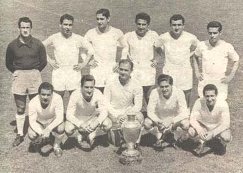

Champions League History
This tournament has been held since 1955, with the first winners being Real Madrid. Not only are they the first winners ever, but they are also the club with the most trophies under their belt with 14. Their most recent win came last year in 2022. Aside from being the club with the most trophies, they are also responsible for having the player with the most trophies. Paco Gento holds the record for most trophies (6), while Real Madrid legend, Cristiano Ronaldo, sits at 2nd place with 5 at the moment.
1955 Real Madrid | Paco Gento
